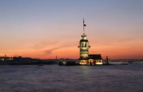
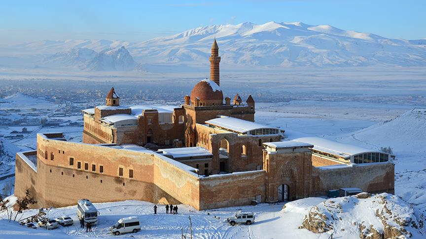
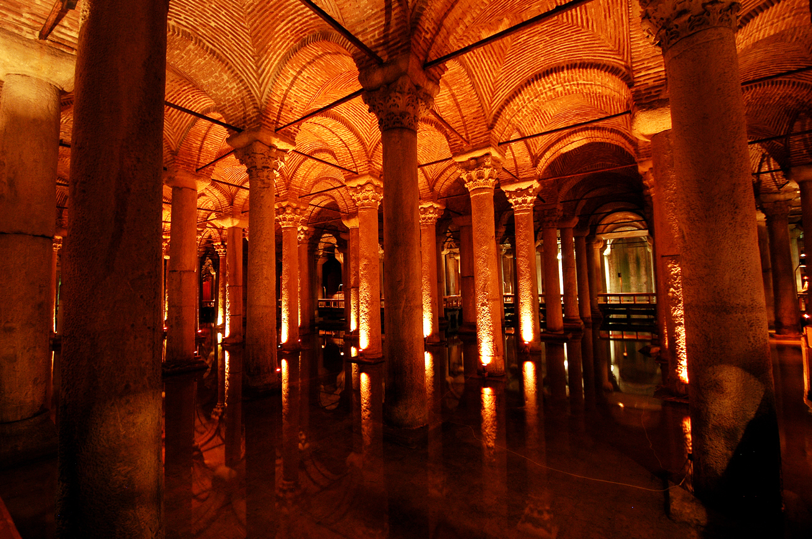
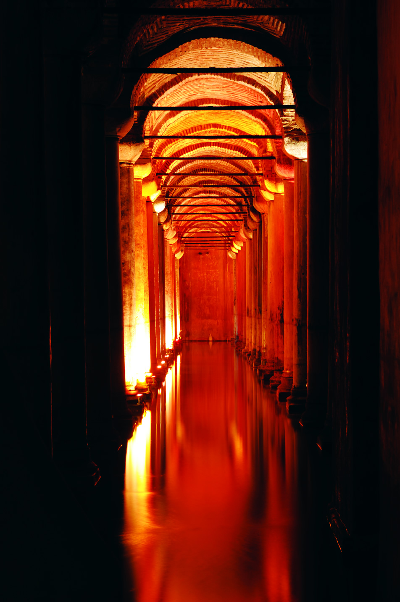
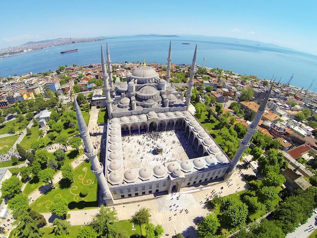
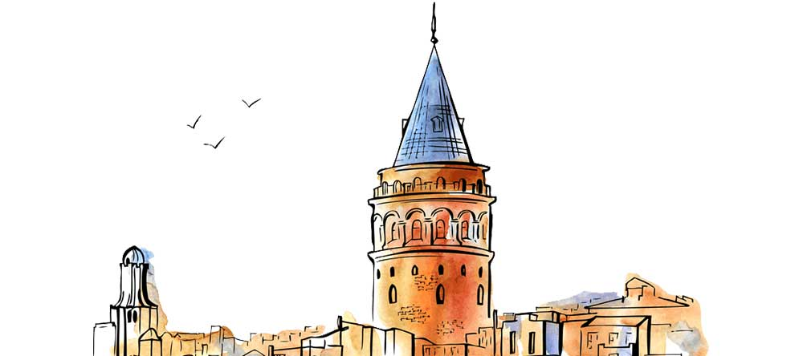
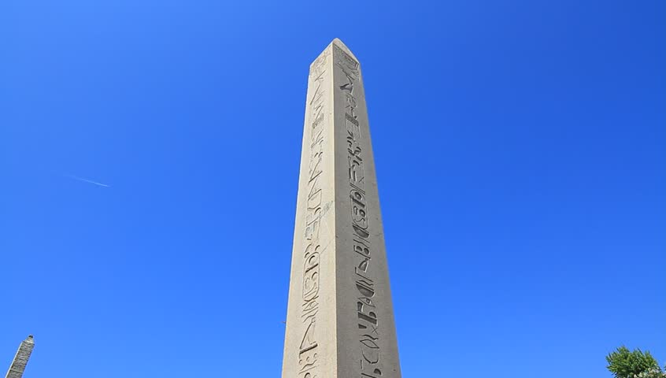

Topkapı Palace was not only the residence of the Ottoman sultans, but also the administrative and educational centre of the state. Initially constructed between 1460 and 1478 by Sultan Mehmed II, the conqueror of Constantinople, and expanded upon and altered many times throughout its long history, the palace served as the home of the Ottoman sultans and their court until the middle of the 19th century. In the early 1850s, the palace became inadequate to the requirements of state ceremonies and protocol, and so the sultans moved to Dolmabahçe Palace, located on the Bosphorus. Despite this move, the royal treasure, the Holy Relics of the Prophet Muhammad, and the imperial archives continued to be preserved at Topkapı, and-since the palace was the ancestral residence of the Ottoman dynasty as well as the place where the Holy Relics were preserved-Topkapı continued to play host to certain state ceremonies. Following the abolishment of the Ottoman monarchy in 1922, Topkapı Palace was converted into a museum on April 3rd 1924, on the order of Mustafa Kemal Atatürk. After the conquest of Constantinople, Sultan Mehmed II (r. 1444-46, 1451-81) had a palace built in what is modern-day Istanbul’s Beyazıt district, on the spot where the University of Istanbul stands today; this first palace subsequently became known as the Old Palace (Eski Saray). Following the construction of the Old Palace, Mehmed II then had the Tiled Kiosk (Çinili Köşk) built, followed by Topkapı Palace itself, to which the court relocated when construction was complete. Mehmed called this place the New Palace (Sarây-ı Cedîd). The palace received its current name when Sultan Mahmud I (r. 1730-54) had a large wooden palace constructed near the city’s Byzantine walls, in front of which were placed several ceremonial cannons. This seaside palace was named the Cannon Gate Palace by the Sea (Topkapusu Sâhil Sarâyı), and when this palace was destroyed in a fire, its name was transferred to Mehmed II’s New Palace. Topkapı Palace, which developed and grew over the centuries, had a design that played an important role in Ottoman governmental philosophy and in the relations between the palace and its subjects. When Topkapı was first built, its plan was influenced by the splendor of the Edirne Palace located on the Tunca River, which had been constructed by Mehmed II’s father, Sultan Murad II (r. 1421-44, 1446-51) but very little of which survives today. The basic design of the palace is centred on various courtyards and gardens, around which are arranged offices devoted to state business, the buildings and pavilions serving as the residence of the sovereign and the buildings set aside for the court employees who lived in the palace. Topkapı Palace is built atop the Byzantine acropolis on Sarayburnu at the tip of the Istanbul peninsula. It is surrounded by the Sea of Marmara, the Bosphorus and the Golden Horn. On the land side, the palace is surrounded by 1,400-meter-long high encircling walls-known as the “Royal Walls” (Sûr-ı Sultânî)-while on the side facing the sea it is surrounded by Byzantine walls. The palace covers an area of approximately 700,000 square meters, a major part of which area is set aside for the Royal Gardens (Hasbahçe). The court of Topkapı Palace proper is made up of two basic organizations: the Outer Palace (Bîrûn) and the Inner Palace (Enderûn); the Harem was a part of the latter. The design of residences, ceremonies and ceremonial spaces, and all of the many palace facilities were set out according to this basic organizational principle. Within the Topkapı Palace complex are three main gates-the Imperial Gate (Bâb-ı Hümâyûn), the Gate of Salutation (Bâbüsselâm), and the Gate of Felicity (Bâbüssaâde)-four courtyards, the Harem, the Royal Gardens-today known as the Rose Garden (Gülbahçe)-and various other gardens.
 Maiden Tower in Istanbul Kizkulesi is located off the coast of Salacak neighborhood in Üsküdar district, at the southern entrance of the Bosphorus. It literally means "Maiden's Tower" in Turkish. The name comes from a legend: the Byzantine emperor heard a prophecy telling him that his beloved daughter would die at the age of 18 by a snake. So he decided to put her in this tower built on a rock on the Bosphorus isolated from the land thus no snake could kill her. But she couldn't escape from her destiny after all, a snake hidden in a fruit basket brought from the city bit the princess and killed her. Another legend wrongly mentions Hero and Leander in the tower, therefore some people wrongly call it "Leander's Tower", a sad love story told by Ovidius: Hero was one of the priestess of Aphrodite living in the tower. One day she left the tower to attend a ceremony in the temple where she met Leandros and they fall in love with each other. Leandros swam to the tower every night to visit his love, meanwhile she was holding a torch to guide him in the dark waters towards her in the tower. But on a stormy night Leandros couldn't see the light because it was put out by the winds, and he swam all night loosing his way until he was drowned. Hero, seeing that her lover died, she also jumped into the water and suicided. Some people narrate this love story as it was happened on the Bosphorus, but in fact it's a legend from the Dardanelles, when Leandros was swimming to Hero between Abydos (today's Eceabat) and Sestus (today's Canakkale city). Kizkulesi on the BosphorusKizkulesi is dating back to the 5th century BC when it was built by the Athenian general Alcibiades on a rock at the entrance of the Bosphorus for the surveillance of the waterway. A chain was pulled from the land to the tower to make it a checkpoint and customs area for the ships going through. After several restorations in wood and stone, Emperor Alexius Comnenos built a strong defense tower in the 12th century AD calling it Arcla, meaning "Small Tower". The tower was used as a lighthouse and control tower also during the Ottoman period after the Conquest of Constantinople. Final restoration was done in 1998 and opened as a restaurant after spending around 3million US dollars.
 Archaeological research conducted to the west of Doğubayazıt Fortress revealed some stone finds dating as far back as the Urartian era. Therefore, it is usually assumed that the earliest settlement in the area goes back to around 800 BCE. Moreover, a well-fortified town existed there at least since the 4th century CE. In the middle of the 14th century, the region was controlled by the Jalairids. They were a Mongol dynasty that ruled over Iraq and western Persia after the breakup of the Mongol Khanate of Persia. Their domination was disrupted by Timur's conquests and the revolts of the Kara Koyunlu Turkmen. Doğubayazıt area became a part of the Ottoman Empire in 1514. Soon afterwards, the old Doğubayazıt Fortress was abandoned and its walls were partly demolished. Most probably, some of the materials were later used for the construction of Ishak Pasha Palace. At the head of Bayazit Sanjak stood an official with the title of mütesarrıf, appointed directly by the sultan. This position became hereditary within the Kurdish family dynasty of Çildıroğulları. The building of the palace started around the year 1685, on the orders of Çolak Abdi Pasha. The palace was erected very slowly, and its construction was supervised by the generations of the Çildıroğulları. Another member of this family was İshak Pasha who held the position of a vizier in 1723, and the next year was appointed the governor of Tbilisi. His grandson Hasan became the governor of Çıldır in 1760-1761. Another İshak, also the governor of Çıldır, finished the long process of the palace construction. The date of the completion is given by the inscription located above the portal to the harem. It provides the Islamic year 1199, corresponding to 1784-1785 CE. At the time of the construction of the palace, the town expanded in the plain below the palace hill. It is assumed that last pasha of Çildıroğulları dynasty, who inhabited the entire palace, was Mahmut. He is the only member of the family whose tomb is located in the burial chamber below the palace courtyard. The date of his death is illegible on the gravestone, but now it is known that he died in 1805. His successor, Behlül, moved his residence from the palace to the fortress. He resided there when the Russians arrived during the Russo-Ottoman War of 1828. The Russian occupation lasted just one year but much of the wooden structure of the palace was destroyed in that period. The harem doors, plated with gold, as well as documents from the library of the palace were plundered and taken to Russia. It is a great shame as these documents could provide precious information about the construction of the complex. Moreover, an earthquake in 1840 caused severe damage both to the palace and the fortress. By 1860, some rooms had been restored, but the next Russo-Ottoman War erupted in 1877. The palace served as a military shelter, and it was damaged again. This time, the Russians occupied the region until the First World Was when they used it as a military post. Further damage to the palace was made by gunfire, as the city was fought over because of their strategic position between Russian and Turkish troops. In the early days of the Turkish Republic, the palace served as the administrative centre for Ağrı Province and the Bayazıt District. In 1926, the provincial administration moved to the city of Ağrı, and the administration for Bayazıt District relocated into the plain below. Then the palace was used as a cavalier military post, to 1937. Until the early 1930s, the palace was surrounded by the town now called Eski (Old) Bayazıt, originally an Armenian settlement. It was demolished by the Turkish army after a Kurdish uprising, also known as Ararat Rebellion, in 1930. In the following period, the palace was further damaged when stone blocks from its walls were removed as the construction material for nearby mansions.
 One of the magnificent ancient buildings of İstanbul is the Basilica Cistern located in the southwest of Hagia Sofia. Constructed for Justinianus I, the Byzantium Emperor (527-565), this big underground water reservoir is called as “Yerebatan Cistern” among the public because of the underground marble columns. As there used to be a basilica in the place of the cistern, it is also called Basilica Cistern. The cistern is 140 m long, and 70 m wide, and covers a rectangular area as a giant structure. Accessible with 52-step staircase, the Cistern shelters 336 columns, each of which is 9 m high. Erected at 4.80 m intervals from one another the columns are composed of 12 rows, each has 28 columns. The case-bay of the cistern is conveyed by the columns through arches. Majority of the columns, most of which is understood to have been compiled from the ancient structures and sculpted of various kinds of marbles, is composed of a single part and one of it is composed of two parts. The head of these columns bear different features in parts. 98 of them reflect the Corinthian style and part of them reflect the Dorian style. The cistern has 4.80 m high brick walls, and the floor is covered by bricks, and plastered by a thick layer of brick dust mortar for water tightness. Covering 9,800 sqm area in total, the cistern has an estimated water storage capacity of 100,000 tons.  Medusa Heads Except couple of the edged and grooved columns of the cistern, majority of them are shaped as a cylinder. Two Medusa heads, which are used as supports under the two columns at the northwest edge of the cistern, are the great work of art from the Roman period. What attracts most attention from the visitors is that the structure from which the Medusa heads have been taken is unknown. The researchers often consider that it has been brought for being used as supports to the column at the time of construction of the cistern. However, this has not prevented myths for the heads of Medusa. As the legend has it, Medusa is one of the three Gorgonas that are female monsters in the underground world in Greek mythology. The snake-head Medusa, one of the three sisters, has the power of gorgonising the ones that happen to look at her. Accordingly, Gorgone paintings and sculptures were being used for protecting big structures and special venues in that time. And putting the head of medusa in the cistern was for protecting purposes. According to another rumour, Medusa was a girl who boasted for her black eyes, long hair and beautiful body. She loved Perseus, the son of Zeus. Athena was also in love with Perseus and this made Medusa jealous. Therefore, Athena converted medusa's hairs into snakes. Now, everybody that happened to look at Medusa was gorgonised. Afterwards, Perseus headed off medusa and beat many enemies by using her power. Therefore, the head of Medusa was engraved on the handles of the swords in Byzantium, and applied onto supports of the communes in reverse (so that the onlookers would not be gorgonised). According to another rumour, Medusa gorgonised herself by looking sideways. For this reason, the sculptor that made it generated Medusa in three different positions depending on the reflection angles of the light. The Basilica Cistern has been renovated repeatedly until today. It was repaired by the Architect Kayserili Mehmet Ağa during the reign of Ahmad III (M.1723) in the Ottoman Empire, followed by Sultan Abdulhamid II (1876-1909) in the 19th century. There are 8 columns in front of the northeast wall towards the middle of the cistern, and they were exposed to the risk of breaking during the construction works in 1955-1960, thus each of them were surrounded by a thick layer of cement, so they lost their previous feature though. During the rule of Byzantium, the Basilica Cistern used to meet the water needs and requirements of the great palace that covered a wide area where the emperor resided, as well as the other denizens in the region. After conquest of the city of Istanbul in 1453, it was used for a little while and water was supplied to Topkapı Palace where the sultans resided.. However, the Ottomans preferred running water over still water, and established their own water facilities in the city. It is understood that the cistern was not used thereafter and the western world did not notice it until the mid XVI century. It was in 1544-1550 when P. Gyllius, a Dutch traveller that came to Istanbul for making researches on Byzantium ruins was rediscovered and introduced to the western world. In one of his researches, P. Gyllius, while roaming around Hagia Sofia, managed to enter inside the cistern with a torch carrying in his hand by proceeding from the stone steps that went towards the underground from the backyard of a wooden building surrounded by walls situated on a large underground cistern as he was told that the householders there pulled water with buckets down inside the large round holes similar to well on the ground floor of their houses, and even fished there. P. Gyllius ranged around the cistern on a rowing boat under harsh conditions, measured it and identified the columns. The information acquired from his experience was published in the travel book, and Gyllius had influence on many travelers. The cistern was subject to repeated renovations since its establishment. Renovated twice during the reign of the Ottoman Empire, the cistern was repaired during the rule of Ahmed III (1723) by the Architect Kayserili Mehmet Ağa for the first time. And the second repair was made during the rule of Sultan Abdulhamid II (1876-1909). In republican period, the cistern was cleaned by Istanbul Municipality in 1987, and was opened to visits for creating a route. Another extensive cleaning was made in May 1994. This mysterious venue is an integral part of the Istanbul itineraries and has been visited -among others- by the US former President Bill Clinton, Wim Kok the Prime Minister of the Netherlands, Lamberto Dini, Former Minister of foreign Affairs of Italy, Göran Persson, Former Prime Minister of Sweden and Thomas Klestil, Former prime Minister of Austria until today. Currently operated by Kültür A.Ş. (Culture Co.), one of the affiliates of Istanbul Metropolitan Municipality, the Basilica Cistern functions as a museum and is the home for many national and international events.
 The Blue Mosque (Called Sultanahmet Camii in Turkish) is an historical mosque in Istanbul. The mosque is known as the Blue Mosque because of blue tiles surrounding the walls of interior design.Mosque was built between 1609 and 1616 years, during the rule of Ahmed I. just like many other mosques, it also comprises a tomb of the founder, a madrasa and a hospice.Besides still used as a mosque, the Sultan Ahmed Mosque has also become a popular tourist attraction in Istanbul. Besides being tourist attraction, it's also a active mosque, so it's closed to non worshippers for a half hour or so during the five daily prayers. Best way to see great architecture of the Blue Mosque is to approach it from the Hippodrome. (West side of the mosque) As if you are non-Muslim visitor, you also have to use same direction to enter the Mosque. Please ignore and avoid people who offer you to enter mosque without queue up. Those people mostly will try to sell you something and take you to the some shopping place. Best way is to line up and enter Mosque just like other tourists. Don't worry if line looks very long, it will move very fast for sure.

 Obelisk (obelisk) at the Hippodrome in Sultanahmet Square is the stone erected in 1450 to commemorate the victories won by Egyptian Thutmosis III (1502-1448). After the erasure of the stone Pharaohs that remained in Egypt for years, the half-Hellenic half Egyptian state was established here, then the Romans were in the hands of the Romans. In this period, the Romans used the monuments in Egypt to decorate their city. I Constantius re-established the Hippodrome in Constantinople. His son Constantine II (337-361) wanted to move the stone to Alexandria to be taken to Istanbul, but failed to do so, and the stone was left on the shore. Later, by the order of Emperor Julianus (361-363) It is not known when and by whom the stone was brought from Istanbul to Alexandria and how it was carried. The stone that was brought to decorate the hippodrome lay on the ground for a while according to the inscriptions on its base and it was called "Spina" in 390 in the middle of the hippodrome. The stone, which is 19,59 m high, was placed on the wall where it is located today, and an iron road was built from the Marmara Coast to bring it to Sultanahmet Square where it is today.